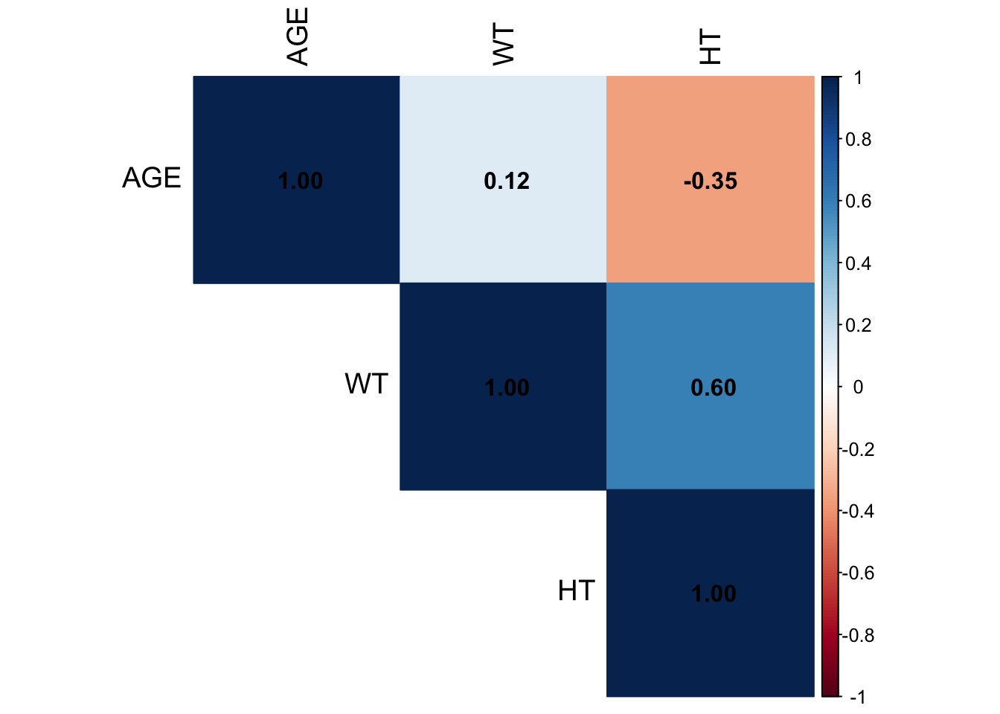
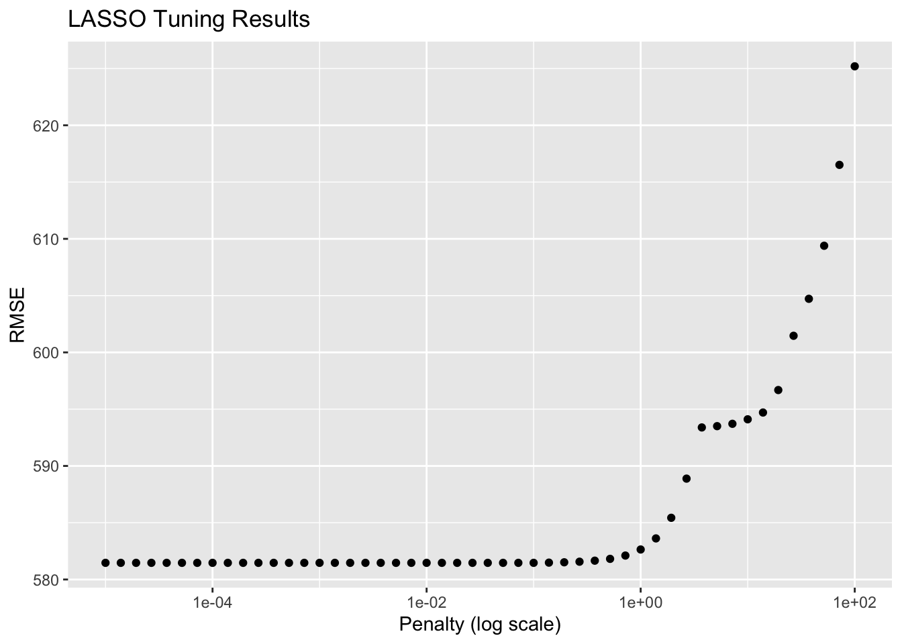
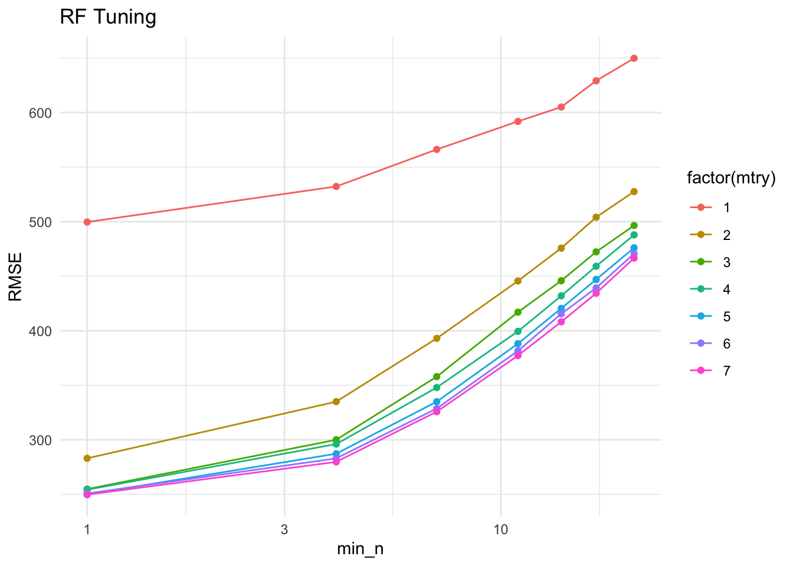
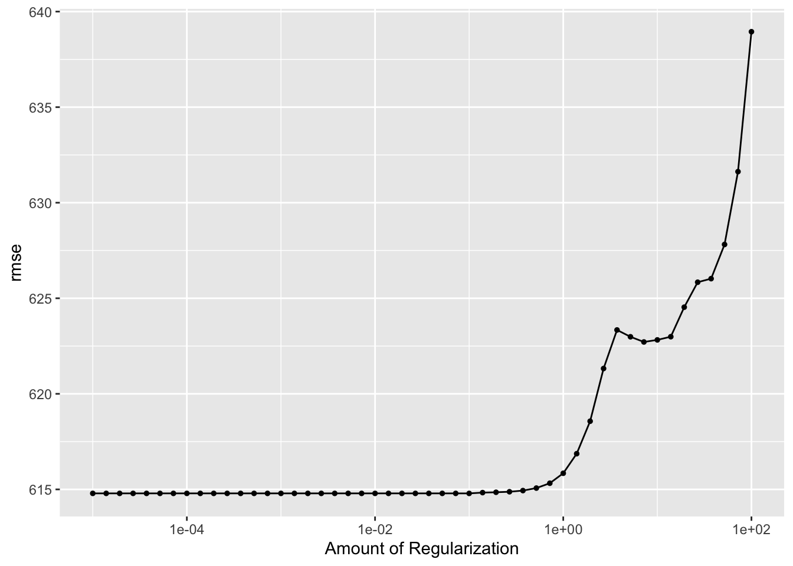
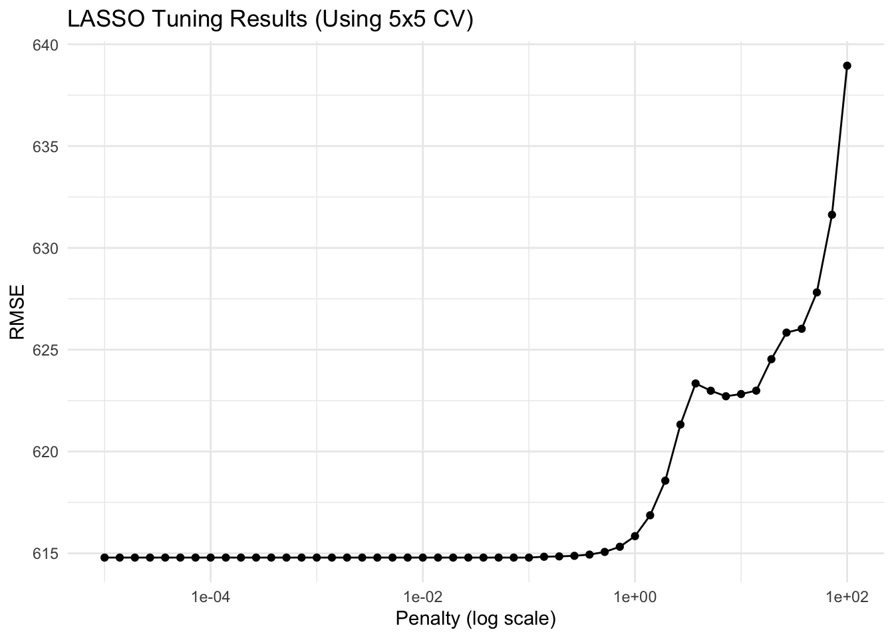
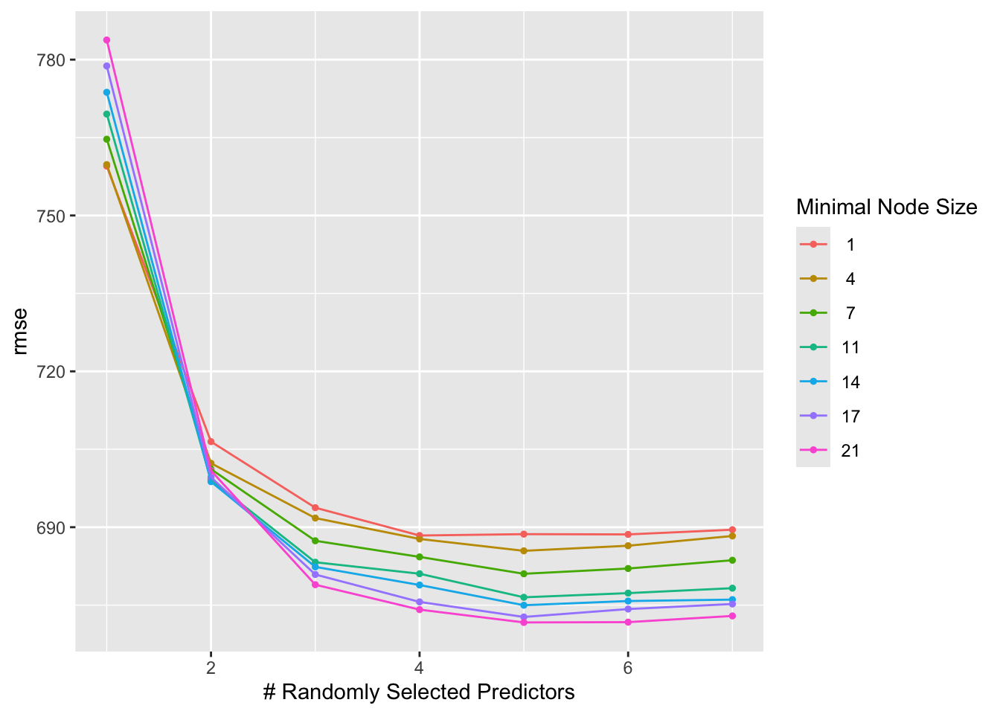
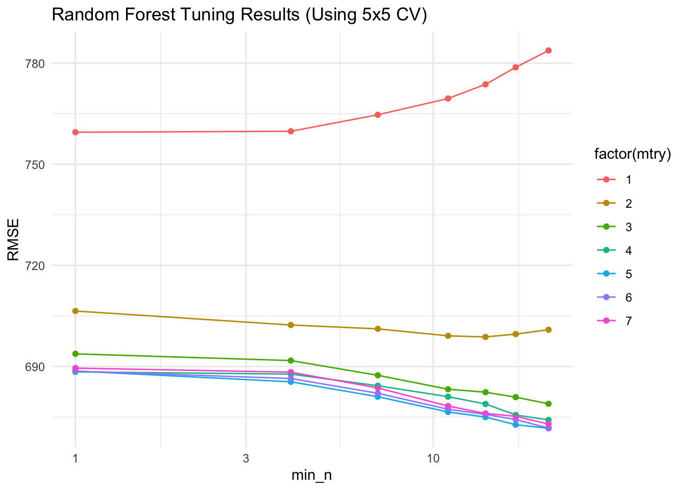

── Attaching core tidyverse packages ──────────────────────── tidyverse 2.0.0 ──
✔ dplyr 1.1.4 ✔ readr 2.1.5
✔ forcats 1.0.0 ✔ stringr 1.5.1
✔ ggplot2 3.5.1 ✔ tibble 3.2.1
✔ lubridate 1.9.4 ✔ tidyr 1.3.1
✔ purrr 1.0.2
── Conflicts ────────────────────────────────────────── tidyverse_conflicts() ──
✖ dplyr::filter() masks stats::filter()
✖ dplyr::lag() masks stats::lag()
ℹ Use the conflicted package (<http://conflicted.r-lib.org/>) to force all conflicts to become errors
── Attaching packages ────────────────────────────────────── tidymodels 1.2.0 ──
✔ broom 1.0.7 ✔ rsample 1.2.1
✔ dials 1.3.0 ✔ tune 1.2.1
✔ infer 1.0.7 ✔ workflows 1.1.4
✔ modeldata 1.4.0 ✔ workflowsets 1.1.0
✔ parsnip 1.2.1 ✔ yardstick 1.3.1
✔ recipes 1.1.0
── Conflicts ───────────────────────────────────────── tidymodels_conflicts() ──
✖ scales::discard() masks purrr::discard()
✖ dplyr::filter() masks stats::filter()
✖ recipes::fixed() masks stringr::fixed()
✖ dplyr::lag() masks stats::lag()
✖ yardstick::spec() masks readr::spec()
✖ recipes::step() masks stats::step()
• Dig deeper into tidy modeling with R at https://www.tmwr.org
corrplot 0.95 loaded
Loading required package: Matrix
Attaching package: 'Matrix'
The following objects are masked from 'package:tidyr':
expand, pack, unpack
Loaded glmnet 4.1-8
here() starts at /Users/annalisecramer/MADA/annalisecramer-MADA-portfolio-main/annalisecramer-MADA-portfolioMachine Learning Model Exercise
Load packages and choose base seed number.
Start by loading data that we left off on in the fitting exercise.
here()[1] "/Users/annalisecramer/MADA/annalisecramer-MADA-portfolio-main/annalisecramer-MADA-portfolio"data4 <- readRDS(here("fitting-exercise", "data", "data4.rds"))I can’t find what the race variable repsonses encoded for. I kind of rememebr from a few weeks ago that there was a multiple races option. Below, I’ll recode 7 and 88 into 3.
data5 <- data4 %>%
mutate(RACE = ifelse(RACE %in% c(7, 88), 3, RACE))
unique(data5$RACE)[1] 2 1 3Next, let’s make a pairwise correlation plot for the continuous variables, which are age, weight, height. The correlations don’t look too high/low, so I’m not going to remove any of them.
#pull out continuous variables
cor_matrix <- cor(data5[, c("AGE", "WT", "HT")], use = "complete.obs")
#make correlation plot
corrplot(cor_matrix, method = "color", type = "upper", tl.col = "black", tl.cex = 1.2, addCoef.col = "black")
Now, I will create a BMI variable using height and weight, which are in metric units.
data6 <- data5 %>%
mutate(BMI = WT / (HT)^2) #bmi formula
unique(data6$BMI) #checking [1] 30.10 25.96 21.92 28.43 26.42 22.13 25.68 20.68 23.99 30.57 26.20 23.77
[13] 26.46 25.95 23.60 26.97 30.25 25.53 24.66 24.68 26.33 26.47 25.66 31.17
[25] 25.96 28.49 29.29 27.48 23.23 27.35 24.23 26.17 26.06 31.27 26.81 27.47
[37] 31.75 30.29 28.51 30.25 21.12 32.21 22.78 29.04 29.83 30.40 29.06 18.69
[49] 22.31 29.97 28.28 29.69 25.06 24.56 23.07 24.18 24.46 26.01 28.44 30.80
[61] 21.19 20.95 23.87 25.99 27.79 30.65 26.32 31.35 25.30 30.47 30.19 21.38
[73] 23.25 22.93 28.10 24.86 30.03 23.89 26.45 20.43 24.69 28.46 29.99 22.18
[85] 30.21 27.88 20.34 21.50 21.94 29.60 24.56 25.73 26.14 25.96 21.00 25.56
[97] 28.93 30.16 31.89 23.59 27.81 30.95 24.98 24.98 25.91 23.40 31.28 30.07
[109] 25.18 29.74 28.12 26.78 25.78 28.20 30.50 31.03 26.58 31.69 29.07Let’s construct 3 models. For the first model, we’ll revisit the one we had previously, namely a linear model with all predictors. For our second model, we’ll use LASSO regression. For our third model, we’ll do a random forest (RF).
########## Linear Model ########################################################
# Define the model specification using lm
lm_all <- linear_reg() %>%
set_engine("lm")
# Create a workflow
lm_all_wf <- workflow() %>%
add_model(lm_all) %>%
add_formula(Y ~ .)
########## LASSO Regression ####################################################
set.seed(rnseed)
# Define a LASSO model with a fixed penalty
lasso_all <- linear_reg(penalty = 0.1) %>%
set_engine("glmnet") %>%
set_mode("regression")
# Create a workflow
lasso_all_wf <- workflow() %>%
add_model(lasso_all) %>%
add_formula(Y ~ .)
########## Random Forest Model #################################################
set.seed(rnseed)
# Define the model specification using the ranger engine
rf_all <- rand_forest(mode = "regression") %>%
set_engine("ranger", seed = rnseed)
# Create the workflow
rf_all_wf <- workflow() %>%
add_model(rf_all) %>%
add_formula(Y ~ .)Now, we will fit all 3 models, and calculate the RMSE for them to compare.
########## Linear Model ########################################################
# Fit the model on training data
lm_all_fit <- lm_all_wf %>% fit(data6)
# Compute predictions
preds_lm_all <- predict(lm_all_fit, data6) %>% bind_cols(data6)
# Compute RMSE
rmse_lm_all <- rmse(preds_lm_all, truth = Y, estimate = .pred)
paste0("RMSE Linear Model: ", rmse_lm_all$.estimate)[1] "RMSE Linear Model: 581.417690122579"########## LASSO Regression ####################################################
# Fit the model on training data
lasso_all_fit <- lasso_all_wf %>% fit(data6)
# Compute predictions on training data
preds_lasso_all <- predict(lasso_all_fit, data6) %>% bind_cols(data6)
# Compute RMSE
rmse_lasso_all <- rmse(preds_lasso_all, truth = Y, estimate = .pred)
paste0("RMSE LASSO Model: ", rmse_lasso_all$.estimate)[1] "RMSE LASSO Model: 581.46647664791"########## Random Forest Model #################################################
# Fit the model on the training data
rf_all_fit <- rf_all_wf %>% fit(data6)
# Compute predictions on training data
preds_rf_all <- predict(rf_all_fit, data6) %>% bind_cols(data6)
# Compute RMSE
rmse_rf_all <- rmse(preds_rf_all, truth = Y, estimate = .pred)
paste0("RMSE Random Forest Model: ", rmse_rf_all$.estimate)[1] "RMSE Random Forest Model: 357.645737679099"We will tune the LASSO and random forest models’ hyperparameters. The linear model from earlier doesn’t have hyperparamters to tune.
In the LASSO results plot, we see the RMSE is lowest when the penalty is lowest, which means it’s behaving more like a regular linear model (OLS model), in which LASSO isn’t doing a lot of regularization. With higher penalties, LASSO will cut coefficients to reduce complexity. However, doing this increases bias which increaes RMSE.
########## LASSO Tuning ####################################################
set.seed(rnseed)
# Define a grid of penalty values on a log scale
lasso_grid <- 10^seq(log10(1E-5), log10(1E2), length.out = 50)
# Update the LASSO model to use tune() for the penalty
lasso_tune <- linear_reg(penalty = tune()) %>%
set_engine("glmnet") %>%
set_mode("regression")
# Create a workflow
lasso_tune_wf <- workflow() %>%
add_model(lasso_tune) %>%
add_formula(Y ~ .)
# Create resampling object
resamples <- apparent(data6)
# Perform tuning using apparent resampling
lasso_tune_res <- tune_grid(
lasso_tune_wf,
resamples = resamples,
grid = tibble(penalty = lasso_grid),
metrics = metric_set(rmse),
control = control_grid(save_pred = TRUE)
)
# Collect results
lasso_results <- collect_metrics(lasso_tune_res)
lasso_rmse <- lasso_tune_res$.metrics[[1]]
glimpse(lasso_rmse)Rows: 50
Columns: 5
$ penalty <dbl> 1.000000e-05, 1.389495e-05, 1.930698e-05, 2.682696e-05, 3.7…
$ .metric <chr> "rmse", "rmse", "rmse", "rmse", "rmse", "rmse", "rmse", "rm…
$ .estimator <chr> "standard", "standard", "standard", "standard", "standard",…
$ .estimate <dbl> 581.4664, 581.4664, 581.4664, 581.4664, 581.4664, 581.4664,…
$ .config <chr> "Preprocessor1_Model01", "Preprocessor1_Model02", "Preproce…# Plot, autoplot isn't working, chatGPT says to plot it manually, lasso_results not plotting
ggplot(lasso_rmse, aes(x = penalty, y = .estimate)) +
geom_point() +
scale_x_log10() +
labs(title = "LASSO Tuning Results",
x = "Penalty (log scale)",
y = "RMSE")
########## Random Forest Tuning ############################################
set.seed(rnseed)
# Define the RF model with tunable hyperparameters
rf_tune <- rand_forest(mtry = tune(), min_n = tune(), trees = 300) %>%
set_engine("ranger", seed = rnseed) %>%
set_mode("regression")
# Create a workflow
rf_tune_wf <- workflow() %>%
add_model(rf_tune) %>%
add_formula(Y ~ .)
# Define tuning grid for mtry (1 to 7) and min_n (1 to 21)
rf_grid <- grid_regular(
mtry(range = c(1, 7)),
min_n(range = c(1, 21)),
levels = c(7, 7)
)
# Create resampling object
resamples <- apparent(data6)
# Perform tuning
rf_tune_res <- tune_grid(
rf_tune_wf,
resamples = resamples,
grid = rf_grid,
metrics = metric_set(rmse),
control = control_grid(save_pred = TRUE)
)
# Collect tuning results
rf_results <- rf_tune_res$.metrics[[1]]
glimpse(rf_results)Rows: 49
Columns: 6
$ mtry <int> 1, 2, 3, 4, 5, 6, 7, 1, 2, 3, 4, 5, 6, 7, 1, 2, 3, 4, 5, 6,…
$ min_n <int> 1, 1, 1, 1, 1, 1, 1, 4, 4, 4, 4, 4, 4, 4, 7, 7, 7, 7, 7, 7,…
$ .metric <chr> "rmse", "rmse", "rmse", "rmse", "rmse", "rmse", "rmse", "rm…
$ .estimator <chr> "standard", "standard", "standard", "standard", "standard",…
$ .estimate <dbl> 499.6873, 283.0590, 254.8678, 254.3069, 249.9474, 250.8785,…
$ .config <chr> "Preprocessor1_Model01", "Preprocessor1_Model02", "Preproce…# Plot, autoplot isn't working, chatGPT says to plot it manually, lasso_results not plotting
ggplot(rf_results, aes(x = min_n, y = .estimate, color = factor(mtry))) +
geom_line() +
geom_point() +
scale_x_log10() +
labs(title = "RF Tuning",
x = "min_n",
y = "RMSE") +
theme_minimal()
Up next, we will do this with CV, tuning both the LASSO and RF. We’ll now create real samples. Let’s do 5-fold cross-validation, 5 times repeated. Then redo the tuning of both models.
Comparing the plots to the plots from earlier, we can see the LASSO plots look the same. The RF looks completely different now, with very few predicitors the RMSE is very high but as the number of predictors increaes, the RMSE lowers and flattens out at a vlaue that is still higher than prior to using CV. RF has a atendency to overfit when given a lot of options (like we did with CV), so that’s my guess as to why RMSE is higher here than before. Overall, I think the LASSO model preforms better.
#### LASSO Regression ##########################################################
set.seed(rnseed) # Set seed
# Create a 5-fold cross-validation repeated 5 times
cv_folds <- vfold_cv(data6, v = 5, repeats = 5)
# Define the LASSO model with tuning
lasso_tune <- linear_reg(penalty = tune()) %>%
set_engine("glmnet") %>%
set_mode("regression")
# Create a workflow
lasso_tune_wf <- workflow() %>%
add_model(lasso_tune) %>%
add_formula(Y ~ .)
# Perform tuning with real cross-validation
lasso_tune_res <- tune_grid(
lasso_tune_wf,
resamples = cv_folds, # Use real resamples now
grid = tibble(penalty = lasso_grid),
metrics = metric_set(rmse),
control = control_grid(save_pred = TRUE)
)
# Collect results and visualize
autoplot(lasso_tune_res)
lasso_results <- collect_metrics(lasso_tune_res)
ggplot(lasso_results, aes(x = penalty, y = mean)) +
geom_point() +
geom_line() +
scale_x_log10() +
labs(title = "LASSO Tuning Results (Using 5x5 CV)",
x = "Penalty (log scale)",
y = "RMSE") +
theme_minimal()
#### Random Forest Model #######################################################
set.seed(rnseed) # Set seed
# Create a 5-fold cross-validation, repeated 5 times
cv_folds <- vfold_cv(data6, v = 5, repeats = 5)
# Define the RF model with tunable hyperparameters
rf_tune <- rand_forest(mtry = tune(), min_n = tune(), trees = 300) %>%
set_engine("ranger", seed = rnseed) %>%
set_mode("regression")
# Create a workflow
rf_tune_wf <- workflow() %>%
add_model(rf_tune) %>%
add_formula(Y ~ .)
# Define tuning grid for mtry (1 to 7) and min_n (1 to 21)
rf_grid <- grid_regular(
mtry(range = c(1, 7)),
min_n(range = c(1, 21)),
levels = c(7, 7) # This defines a 7x7 grid
)
# Perform tuning with real cross-validation
rf_tune_res <- tune_grid(
rf_tune_wf,
resamples = cv_folds, # Use real cross-validation samples
grid = rf_grid,
metrics = metric_set(rmse),
control = control_grid(save_pred = TRUE)
)
# Collect tuning results
autoplot(rf_tune_res) # Automatically plot tuning results
rf_results <- collect_metrics(rf_tune_res)
ggplot(rf_results, aes(x = min_n, y = mean, color = factor(mtry))) +
geom_point() +
geom_line() +
scale_x_log10() +
labs(title = "Random Forest Tuning Results (Using 5x5 CV)",
x = "min_n",
y = "RMSE") +
theme_minimal()